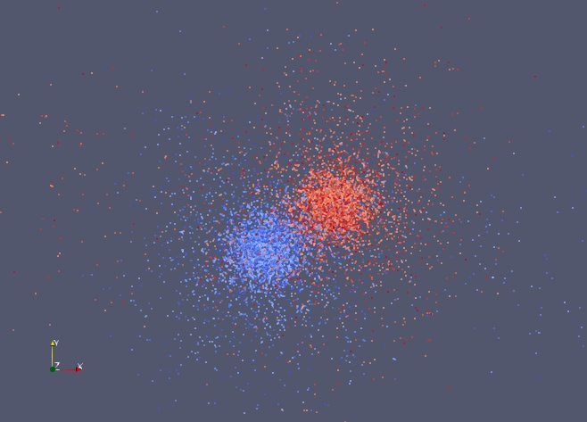

After the trials with VTK (see A - Graphical Display) I basically gave up, until I saw a posting from Kitware announcing a new release of ParaView, version 5.9.
Since the work with VTK had issues with Python 3.7, but the new ParaView would hopefully work with Python 3.8 as available on OpenBSD, I thought to give it a try.
This is a “thick-client” “multi-paradigm” “3D-” and “2D-” and “animation” viewer for science and engineering data.
OK, but what is it really?
ParaView gives you selectivity on a multi-valued dataset (such as pressure, temperature, flows in a 3D space). You choose “pressure” for display in a 3D space, then rotate the resulting scene so you can see where pressure varies. Pressure is colour-coded so you can see high- and low-pressure regions.
Then you change from pressure to velocity and see a different view.
Mostly, the data originates from simulations generated from 3D modelling software such as OpenFOAM, Ansys, weather simulators, and so on.
ParaView has it’s own data structures as well as supporting the native formats for dozens of engineering and scientific software packages. This is based on the VTK visualization system and uses the VTK data format.
A short description of the VTK data format is: an XML file with embedded binary (or base64-coded) data describing points in space, an optional set of links between the points which describes a 2D triangular mesh or sets of 3D tetrahedrals, and values such as pressure, temperature, velocity etc at each point or tetrahedral.
Look at the Paraview website for example images.
The download is not small, about 63MB of xz-compressed C++ and C code. It takes about as long as you can imagine, or perhaps longer, to compile.
Being so big, it has many many compile options. My prior experience analyzing the VTK code helped out here. There were several issues:
The third-party library analysis was directly useful; five items needed to be used from OpenBSD ports or base to make it work (jpeg, lz4, png, tiff and glew).
The category was easy, x11, with a secondary of graphics.
The Qt version and related libraries took a bit of iteration, as Qt has several names for the same things and sometimes embeds some named features into a common library. The Makefile has these figured out.
The WANTLIB and LIB_DEPENDS / RUN_DEPENDS was determined by porting tools, again after some iterations.
For the result, see my posting at New: x11/paraview on @ports.
Paraview is well-integrated with Python (version 3.8). It defines a separate python instance (“pvpython”) with access to numerous ParaView and VTK python modules, most of which are implemented in C++.
As usual with python, the python integration code and related shared libraries are
located at /usr/local/lib/python3.8/site-packages/paraview/.
The relevent shared objects are located in paraview/modules/ and
are named *.so under the site-packages/paraview directory.
However, ParaView itself is also composed of a large number of standard
shared object files, located in /usr/local/lib. Thus there are many
shared objects delivered in a ParaView build.
When you look these over, many of the python shared objects
have similar names to the ParaView shared
objects at /usr/local/lib/. For example,
vtkRemotingApplication.so for python and
libvtkRemotingApplication.so.0.0 in /usr/local/lib.
So why is this an issue? It has to do with how Paraview is built (with cmake), and how OpenBSD manages shared-library versions to suit itself, rather than the arbitrary and unpredictable version numbering of thousands of different package originators.
When OpenBSD compiler tools (including cmake, which is modified for OpenBSD) create a shared object, they use linker options to change the version number from whatever is defined by the original source file. The OpenBSD-specific version is given in the SHARED_LIBS symbol in the Makefile.
When the shared object name matches a name in the SHARED_LIBS list (found in the port Makefile), the shared object version number is modified. The expectation is this file will appear in /usr/local/lib (or a subdirectory), and so it is created with trailing .so.NN.MM version numbers from the SHARED_LIBS list.
The ParaView python modules .so have the same basename as the ParaView shared
objects .so.NN.MM. This is unusual: I haven’t found any other python package in
OpenBSD ports or other linux distributions that duplicates names this way.
Usually the python modules have names distinct from any shared objects.
As a result, uniquely for OpenBSD, the python module shared objects
are renamed and
versioned by the modified cmake tools. And this breaks the pvpython
tools – they can’t find site-packages/paraview/xyz.so because it
has been renamed to xyz.so.0.0.
You might consider this a bug, as OpenBSD cmake is (making the linker) modify
files that are
not named libxxxx.so. The matching algorithm in cmake is quite general;
rather that post a bugfix I did a workaround.
The Makefile is thus modified to undo the renaming for python modules in the vtkmodules and paraview modules directories. This is done by patching the cmake_install file. We also adjust the softlinks for the same files.
For reference, the cmake patch for OpenBSD is at cmake patch.
The compilation takes about an hour or so on an up-to-date 8-core Ryzen with 16GB memory. (I also built it on a Raspberry Pi 4, but had to set it single-threaded compile due to limited memory. That took a day.)
The limiting factor is compiling xmltools, included with ParaView, which requires a huge amount of RAM to build (2+GB).
The ParaView-compatible data formats are very application specific. Since I wasn’t running any of the relevent tools, I had to adapt the data sources I did have to what Paraview could read.
The astrophysics package called Arepo generates hdf5 files. An hdf5 file consists of named arrays (and scalars) embedded in a single file. Converting these to the .vtu file format took some doing (directly via the pvpython program didn’t quite work). Eventually I found the evtk package which converts numpy arrays (in turn, created by the python h5py module) to VTK compatible files.
As an (abbreviated) example, consider this fragment:
import sys
import numpy as np
import h5py
from evtk.hl import pointsToVTK
fn = sys.argv[1]
arepo=h5py.File(fn,"r")
points = arepo["PartType1"]["Coordinates"]
velocity = arepo["PartType1"]["Velocity"]
dmdensity = arepo["PartType1"]["DMDensity"]
datadict = {}
datadict["Velocity"] = arepo["PartType1"]["Velocity"][()]
datadict["DMDensity"] = arepo["PartType1"]["DMDensity"][()]
ofn="x.vtu"
pointsToVTK(ofn,
np.ravel(points[:,0],order='F'),
np.ravel(points[:,1],order='F'),
np.ravel(points[:,2],order='F'),
data = datadict)
The h5py module reads the given .hdf5 file. This file is something like a python dictionary, and is processed the same way, as you can see with the points, velocity and dmdensity expressions.
The evtk function pointsToVTK requires some unusual inputs, requiring
separate x, y and z coordinates (rather than an array of xyz). Once
you supply a points array, the data dictionary defines any additional
scalar values at each point.
A vector definition at each point is also possible.
The result looks something like this:

Porting big complicated software is not entirely impossible, you just need perserverence and some coincident supporting tools.
February 2021/March 2021.
OpenBSD Numerics Experience - 1 - RNG
OpenBSD Numerics Experience - 2 - RNG floats
OpenBSD Numerics Experience - 3 - FFTW
OpenBSD Numerics Experience - 4 - CAF
OpenBSD Numerics Experience - 5 - MPI Networking
OpenBSD Numerics Experience - 6 - Memory Models
OpenBSD Numerics Experience - 7 - Python Image Display
OpenBSD Numerics Experience - 8 - RNGs, again
OpenBSD Numerics Experience - 9 - Nim
OpenBSD Numerics Experience - A - Graphical Display
OpenBSD Numerics Experience - B - ParaView
OpenBSD Numerics Experience - C - Numerical Debugging
OpenBSD Numerics